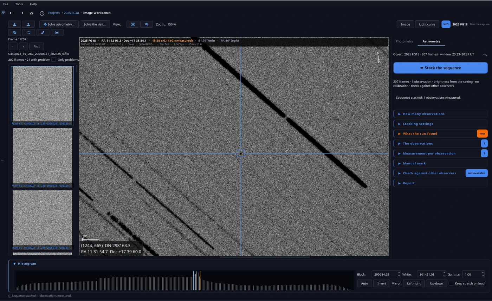

07. Astrometría


La astrometría de cuerpos menores (asteroides, NEOs, cometas) vive en la pestaña Astrometría del editor FITS, y su motor es el track & stack: apilar tus frames siguiendo el movimiento del objeto, no el de las estrellas.
Antes de nada: resolver la placa
Todo lo astrométrico necesita una solución de placa (la WCS: qué punto del cielo es cada píxel). En Configuración… → Medida → Solver de placa eliges:
Auto (recomendado): prueba primero ASTAP local (rápido, sin red, gratis) y cae a nova.astrometry.net si no lo tienes o no resuelve.
ASTAP solo, o nova solo, si lo prefieres.
Con Save the solved WCS into the FITS header (activado por defecto), la solución se escribe en la cabecera del FITS (sin tocar los píxeles) y cualquier otro programa la verá.
¿Por qué ASTAP primero? Porque resuelve en segundos en tu máquina, sin subir nada a internet ni depender de la cola de un servicio ajeno. Nova es el respaldo: más lento y con clave de API, pero ciega de verdad (no necesita saber dónde apuntabas). La combinación cubre el 99% de los casos sin que tengas que decidir.
El track & stack
Apilar la secuencia ejecuta el pipeline completo: resuelve la referencia, registra los frames entre sí, barre la velocidad del objeto (que llega de Horizons al empezar), detecta, apila cada observación, mide y comprueba. Mientras corre, el mismo botón es Cancel.
La decisión clave es Observaciones: en cuántas observaciones (puntos de medida) divides la secuencia. Cada observación es un grupo contiguo de frames con su propio instante de media exposición (T_mid).
¿Por qué importa el número de observaciones? Porque la SNR crece con la raíz cuadrada de los frames: pedir más observaciones reparte la señal y cada una llega menos lejos. Junto al selector verás la SNR que se espera para cada observación con el reparto actual. Tres observaciones sólidas valen más al MPC que seis débiles; la regla práctica es: las justas para ver el movimiento, no más.
¿Por qué T_mid y no el inicio de la exposición? Porque la posición del objeto durante la toma es la media de su recorrido, y su mejor estimador es el instante central. Reportar el arranque introduce un sesgo de media exposición, que en un NEO rápido (5″/min) son decenas de segundos de arco de error sistemático. El MPC espera T_mid; NightScribe lo calcula por ti.
Las opciones del stack, y su motivación
Método (cómo se combinan los frames): la media con sigma-clip es el defecto porque llega un cuarto de magnitud más profundo que la mediana (una mediana es 1,25 veces más ruidosa que una media) y, a diferencia de la media simple, rechaza los trazos de satélites y rayos cósmicos. Weighted es el mismo clip pero pesando cada frame por el ruido de su cielo: en una noche estable no cambia nada, y es lo que salva una noche con cirros finos o Luna. Usa la mediana solo cuando haya que rechazar algo a toda costa y el clip no pueda.
Remuestreo: el bilineal (defecto) da una imagen visiblemente más limpia sin coste en profundidad (medido por inyección de fuentes, no asumido). El cúbico conserva una PSF marginalmente más afilada con una imagen más granulada: úsalo si persigues detalle en un campo muy poblado. Ojo: una imagen más suave no es más profunda; la profundidad la decide el método de arriba y los frames que entran.
Campo: cuánto cielo cubre el stack final de cada observación. El frame entero conserva las comparadas alrededor; una ventana menor es más rápida y ligera. El barrido de velocidad siempre trabaja sobre el recorte del rastro del objeto, diga lo que diga esto.
Aplicar la calibración: aplica la receta de la pestaña Calibración a cada frame al leerlo. Sin ella, el polvo del tren óptico y el viñeteo se cuelan al stack y, como el objeto y las comparadas no caen en el mismo sitio, solo el viñeteo ya vale un error sistemático de una décima de magnitud en el brillo. La receta se resuelve contra la biblioteca de Ajustes, y la pestaña Calibración te dice qué master usa para cada pieza y por qué no usa uno que sí ves en la biblioteca (una temperatura fuera de tolerancia, otra exposición, otro filtro u otra cámara, o un flat mucho más antiguo que las luces). Un flat se usa cualquiera que sea la temperatura del sensor a la que se tomó: su forma es la del tren óptico, no la del sensor.
Medir el brillo y Guardar el apilado de estrellas: la magnitud se mide sobre el stack del objeto y sobre un segundo stack alineado a las estrellas (en el del objeto son trazos). Sin comparadas en el campo, el run reporta solo posiciones y lo dice.
En una tarjeta gráfica (opcional)
Las dos etapas más pesadas de un track & stack pueden correr en tu tarjeta gráfica en vez de en el procesador: el registro (dónde cae cada toma y qué estrellas tiene) y el apilado (deformar cada toma sobre la referencia y combinarlas). Está apagado por defecto y no cambia lo que se mide: el resultado es el mismo, y una máquina sin tarjeta corre exactamente como corría.
El interruptor está en Ajustes → Medición → Astrometría → Trabajo: Deformar y combinar en la GPU, con un selector de Backend al lado.
Auto (el defecto) prefiere CUDA y cae a OpenCL.
CUDA (NVIDIA) u OpenCL (NVIDIA, AMD, Intel) fuerzan uno, para compararlos o para elegir en una máquina que tenga los dos.
¿Por qué dos backends? Porque CUDA solo existe en NVIDIA, mientras que OpenCL corre igual en NVIDIA, AMD e Intel: es el que la app reparte, así que una tarjeta que no sea NVIDIA no se queda fuera. Los dos están medidos contra el procesador y entre sí, y ninguno es el premio de consolación.
¿Por qué está apagado por defecto? Porque no hace falta para llegar a la respuesta, y una reducción debería poder decir qué la calculó. Con el interruptor encendido, la nota del run nombra el dispositivo que hizo el trabajo; cuando lo hizo el procesador, la nota no dice nada al respecto.
La ganancia es mayor donde el trabajo es mayor: la estimación por toma (la imagen fuente y las estrellas) y el apilado a frame completo. Como orden de magnitud, la estimación baja de un quinto de segundo por toma a unas centésimas, y el apilado a cerca de un tercio de su tiempo en el procesador. El método, las cifras y sus matices están en las notas de decisión del proyecto (ADR-089 para la primera vía y ADR-091 para la portable, en docs/adr/).
Leer el resultado
El panel muestra lo que el run encontró: el dithering de la sesión, la calidad de la WCS compuesta, el barrido de velocidad, la detección y el brillo. Cada observación se mide dos veces con la misma receta de centroide: sobre el stack y frame a frame. Un desacuerdo mayor de 0,5″ o 3σ se marca; nunca se resuelve en silencio.
El botón Re-medir el brillo vuelve a ejecutar la receta sobre los apilados guardados de las observaciones del run (los del objeto y sus estrellas) sin re-apilar la visita, y reescribe solo las bandas de los stacks: la posición y la detección no se tocan. Necesita que el run haya guardado el stack de estrellas. Cuando hay un track & stack abierto, la marca del objeto del proyecto se apaga: el stack ya trae la posición medida por el run, y dos marcas (en las coordenadas del plan y en las medidas) se leen como un error.
La traza del propio objeto en el stack de toda la secuencia también ayuda: su longitud y su dirección dan dos movimientos candidatos que siembran el barrido de velocidad, así que un movimiento que la efeméride acertó a medias se puede encontrar con la propia luz del objeto. El barrido sigue decidiendo, con la misma guarda de siempre: solo adopta un candidato que supere a la efeméride por más que la dispersión de la rejilla.
Animar o verificar reproduce los stacks de las observaciones centrados en el objeto y con un solo estirado: el objeto debe quedarse quieto en el centro mientras las estrellas se arrastran. Es la prueba de fuego de que la detección es real. Guardar animación… escribe ese mismo bucle como GIF o MP4, con los niveles que hayas aplicado y la banda de la placa en cada fotograma, para poder compartir la prueba. Parpadeo / montaje… escribe la figura (GIF o montaje) con el mismo estirado en todos los paneles, para que uno débil no parezca tan brillante como uno real.
Si el objeto está por debajo del umbral de detección, Modo manual (objeto débil)… te deja marcarlo a mano sobre el stack de toda la secuencia: la posición es tuya (anclada al centroide, ajustable en pasos de 0,1 px) y la velocidad es la de la efeméride, sin barrido.
El chequeo contra lo publicado
Tras el run, NightScribe compara tus puntos con las observaciones ya publicadas del objeto (la API del MPC, o el NEOCP si aún no está confirmado) y da un veredicto: si tu punto encaja o destaca. Además te enseña la lista entera: todas las observaciones publicadas que usó Find_Orb, con el instante, la estación, la dirección y su residuo en ascensión recta y declinación (dRA / dDec), y tus propias filas resaltadas. Eso es tu error junto al de los demás, tal como lo muestran Find_Orb y Tycho-Tracker. La lista vive en su propia ventana no modal: el bloque del chequeo es una columna estrecha, así que se abre con el botón Observaciones publicadas… y se queda abierta mientras trabajas.
¿Por qué «el chequeo filtra, no prueba»? Porque ajustar a un arco corto no demuestra una detección: demuestra que no la contradices. El chequeo está para cazar errores (un objeto mal identificado, una escala mal resuelta), no para certificar realidades. Si tu punto destaca, el reporte se bloquea por defecto; Forzar el reporte lo fuerza dejando constancia en la propia nota del reporte.
Cuando el chequeo no puede correr lo dice con palabras llanas, y nunca finge: no hay Find_Orb configurado, aún no hay observaciones publicadas, o el arco de referencia es demasiado corto para que Find_Orb ajuste una órbita. Nada de eso bloquea el reporte.
Comprobar con fija la designación con la que el chequeo pregunta al MPC, y Recomprobar repite el chequeo sobre los puntos ya medidos, sin apilar otra vez los fotogramas.
Un residuo sale mal: corrige el centroide a mano
Cuando un punto destaca frente a los demás, la causa habitual es el centroide: un vecino brillante lo arrastró, o el objeto cayó sobre un píxel malo. Clic derecho en una observación (en la tabla de puntos, o sobre la imagen) y elige Ajustar el centroide…: su stack aparece en el escenario del propio editor, así que haces zoom, estiras y lees el histograma con los controles que ya conoces; pinchas el objeto y la marca se ajusta a su centroide local. El punto se re-mide sobre el stack guardado, sin re-apilar, el chequeo se repite solo y ves el error nuevo al instante. El punto queda firmado («centroide re-seleccionado a mano»), y la app dice qué arregla: el centroide, no un registro malo (para eso, re-apila el run). Es la herramienta por observación: re-mide UNA observación sobre su stack guardado. La marca manual (la casilla) es la otra: marca el objeto sobre el stack de toda la secuencia y re-ejecuta el pipeline (un run nuevo), para un objeto por debajo de la puerta. Armar una desarma la otra.
Ese mismo menú ofrece Centroide automático, que deja que la app lo elija otra vez (sembrado en la posición actual del punto) y quita la marca manual, abre el listado de Published observations… (los residuos del run, la misma ventana que el botón del bloque del chequeo), muestra u oculta el ± (el error fotométrico), tanto en la banda sobre la imagen («Mag: X ± Y») como en la columna de la tabla de puntos, e incluye/excluye una observación del reporte y del chequeo sin tocar la medida. Pasar de una observación a otra mantiene tu nivel del histograma (el estirado), así que no lo reajustas para cada apilado.
Un reporte a partir de varias series
Cuando un proyecto tiene varios runs (por ejemplo un objeto en movimiento seguido durante la noche), la sección Reporte combinado de Análisis pone todas las mediciones en un sitio: marca las que quieras, pulsa Comprobar en conjunto para correr un chequeo con todas contra los demás observadores, y Reporte combinado… para construir un reporte MPC. El veredicto nombra cada una de tus observaciones con su propio residuo, para que veas cuál descartar, y Abrir en el editor las carga todas como un conjunto combinado en el editor para trabajarlas allí. Desmarca una observación para dejarla fuera; la selección y el veredicto se guardan. Las re-medidas de la misma observación (los mismos fotogramas apilados otra vez) se fusionan en una, conservando la del run más nuevo.
Al hacer clic en una visita en Análisis se filtran los Astrometry runs a esa visita, y la ventana de la visita lista sus propios runs: haz clic en uno para abrirlo en el editor. Un run deshecho ya no tiene posiciones, así que lo dice en vez de abrir otro distinto.
Tu objeto se confirmó con un nombre nuevo
Un objeto observado mientras seguía en la página de confirmación (una designación del NEOCP) y confirmado después recibe una designación nueva, y sus observaciones se van con ella. NightScribe lo encuentra solo y lo muestra muy visible: el nombre nuevo y la circular (MPEC) que lo publicó, en el chequeo, en la ficha del proyecto y en la visita. El aviso de la ficha lleva un enlace «Usar el nombre confirmado»: renombra el proyecto y mueve su identidad, así que el reporte MPC, el chequeo, la órbita y la efemérides usan desde entonces la designación confirmada. El reporte ya usa el nombre confirmado incluso antes de que pulses ese enlace, así que un lote puede salir con K26T69G y no con la etiqueta temporal. Lo hace para cualquier proyecto cuyo objeto no esté confirmado (el flag del NEOCP, o un kind PCCP), lo hayas observado o no: un proyecto creado a mano también queda cubierto. La búsqueda se lee fresca cuando importa: el chequeo y el reporte preguntan siempre al MPC por el nombre actual, así que una confirmación que caiga mientras trabajas se ve al momento. Cuando tu estación ya aparece entre las observaciones publicadas, lo dice: tus datos están en esa circular; cuando eso no consta, enlaza con el objeto en el MPC y no afirma nada. Si la búsqueda sigue sin encontrarlo (el MPC aún no ha publicado el mapeo), escribe la designación actual en Comprobar con y pulsa Recomprobar.
Find_Orb viene con la app
No instalas Find_Orb a mano: viaja dentro de NightScribe, así que el chequeo funciona recién instalado. Las efemérides DE430t (dominio público, unos 95 MB) son opcionales y le dan al ajuste de órbita perturbaciones planetarias más finas; descárgalas en Ajustes → Medida → Find_Orb si las quieres (no se incluyen). Si ya tienes tu propio Find_Orb, apunta el campo de ruta a él y la app usa esa copia.
El reporte al MPC
Gestionar reporte MPC abre el reporte en su propia ventana: la sumisión completa que espera el MPC, con los instantes de media exposición, las incertidumbres propagadas y la magnitud solo cuando hay comparadas. Entran todas las observaciones; el listón recomendado (SNR ≥ 20, configurable en Configuración) solo avisa: por debajo, la app dice que no recomienda enviar esa observación, y tú decides. Desmarca una observación en la tabla «Medida por observación» para dejarla fuera del reporte y del chequeo (la medida nunca se borra, y puedes recuperarla).
¿Por qué un listón de SNR? Porque el MPC archiva tus medidas para siempre y las usa para órbitas: un punto con SNR 8 tiene una incertidumbre de posición que estropea el ajuste de los demás. Por eso la app avisa en vez de enviarla en silencio: el aviso es su consejo, y la decisión de enviarla es tuya.
El reporte no son solo las medidas: lleva el encabezado que exige el MPC (tu código de observatorio, el observador, el telescopio, el catálogo y el acuse), para que el lote se reconozca. Rellena tus datos una vez en Configuración → Observatorio (nombre, email de contacto, tipo de telescopio y relación focal); la app construye con ellos la línea del telescopio.
Formato: ADES XML es el formato que prefiere el MPC, luego ADES PSV y luego el clásico de 80 columnas. Los tres llevan el encabezado. Si dudas: ADES XML.
El reporte es editable: corrige una designación, una línea o el encabezado antes de enviarlo. Lo que ves es lo que se envía; Regenerar lo reconstruye desde las medidas (y descarta tus ediciones). Cuando lo has editado, los campos de texto de acuse y objetivo del diálogo de envío se desactivan, porque solo llegan al reporte al regenerarlo.
Copiar al portapapeles y Guardar en fichero… sacan el reporte tal como se lee.
Si configuraste Find_Orb en Configuración…, la app cruza tus medidas contra la órbita que él mismo calcula y te muestra los residuos antes de enviar.
Deshacer esta ejecución quita las observaciones de esta ejecución del proyecto (el run queda marcado como deshecho, para el rastro de auditoría); lo demás no se toca.
Enviarlo al MPC: las opciones
Enviar al MPC… abre el diálogo de envío. Pide cuatro cosas y luego manda el lote al MPC; la respuesta del propio servidor (el CurlID o los errores) aparece en el registro del diálogo. El diálogo se abre diciendo qué está a punto de enviar (cuántas observaciones, el formato, el destino y el modo), así el lote no sale sin verse. Sin email de contacto el envío queda bloqueado: el MPC lo necesita.
Email de acuse: dónde manda el MPC su acuse y las designaciones. Es el email de contacto que pusiste en Configuración, y puedes cambiarlo aquí.
Acuse: un texto corto que el MPC te devuelve, para distinguir un lote de otro («Noche 1, campo B»). Opcional.
Objetivo le dice al MPC cómo encaminar el lote. No es decoración: un lote cuya palabra clave falta o está mal puede encaminarse mal o no procesarse como esperas. La app la coloca en la línea ACK del reporte (80 columnas) o en el campo obj_type (ADES).
| Objetivo | Qué significa | Cuándo usarlo |
|---|---|---|
| Unclassified | El objeto ya está clasificado (tiene designación definitiva): envío normal. No hace falta palabra clave. | Asteroides y cometas conocidos |
| NEOCP | El objeto está ahora en la página de confirmación (NEOCP, Near-Earth Object Confirmation Page). El MPC necesita la palabra «NEOCP». | Un candidato sin confirmar |
| PCCP | Está en la página de confirmación de posibles cometas (PCCP). | Un candidato a cometa |
| NEW NEO | Candidato a objeto cercano a la Tierra nuevo. | Recién descubierto, sin confirmar |
| NEW COMET | Candidato a cometa nuevo. | Ídem |
| NEW NATURAL SATELLITE | Candidato a satélite natural nuevo. | Ídem |
| NEW TNO / NEW KBO / NEW DISTANT / NEW CENTAUR | Candidato a TNO, KBO, objeto distante o centauro nuevo. | Ídem |
Por defecto es NEOCP cuando el proyecto está en el NEOCP y Unclassified en los demás casos.
Modo decide si el lote es de verdad o un ensayo:
Normal: el lote se envía de verdad; el MPC lo procesa y lo publica.
Prueba: usa el endpoint de prueba del MPC, que hace las mismas comprobaciones de formato y validez pero no procesa el lote. Es el ensayo: úsalo para comprobar que el reporte está bien sin comprometerlo.
Siguiente: 08. Contarlo.